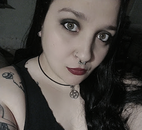

Acerca de Mi

Mi nombre es Cristina, pero todos me conocen como Bela. Desde que tengo memoria, el cine ha sido parte fundamental de mi vida, y dentro de todos los géneros posibles, el terror fue el que me eligió. Me obsesionan las atmósferas inquietantes, los personajes rotos, los relatos que incomodan… y todo lo que deja huella cuando la pantalla se apaga.
Hace poco más de un año, decidí crear un espacio en Instagram para hablar, compartir y recomendar películas de terror a mi manera: sin filtros, con humor, con pasión. Esa cuenta fue creciendo, conectándome con gente maravillosa que ama tanto como yo este género incomprendido y poderoso.
Hoy sigo con ese proyecto, y también lo expandí: junto a una gran amiga iniciamos un podcast, donde exploramos películas, hablamos de nuestras obsesiones cinéfilas, y nos divertimos mucho mientras lo hacemos.
Y ahora, con enorme emoción, les doy la bienvenida a mi primer sitio web. Este espacio es una mezcla de todo lo que amo: sangre, arte, ideas y corazón.
Espero que lo disfruten tanto como yo disfruto crear cada rincón. Están invitados a recorrerlo, participar, recomendar… o simplemente dejarse llevar por el horror.